Playas de aguas turquesas, calas vírgenes y el encanto de la isla más tranquila de las Baleares
Menorca es la isla más tranquila y auténtica de las Baleares. Declarada Reserva de la Biosfera por la UNESCO en 1993, ofrece una combinación única de calas vírgenes de aguas turquesas, paisajes rurales, pueblos blancos y un patrimonio histórico fascinante (desde la prehistoria hasta la dominación británica).
Esta guía de 7 días te llevará por los lugares más espectaculares de Menorca: Cala Macarella y Macarelleta (las playas más famosas), Ciutadella (la antigua capital), Mahon (el puerto natural más grande del Mediterráneo), Cala Mitjana, Cala Turqueta, Cala Pregonda, Cala en Brut, los pueblos blancos de Fornells, Binibeca y Sant Lluís, y el Camí de Cavalls (el sendero que rodea la isla). Alquilar un coche es imprescindible para descubrir las calas más escondidas.
---Mi recomendación personal es alojarse en Ciutadella si quieres estar cerca de las calas más bonitas (Macarella, Turqueta) y disfrutar de la vida nocturna. Si prefieres algo más tranquilo y auténtico, elige Fornells o Sant Lluís. Mahon es ideal si buscas historia y un puerto espectacular.
🚗 Coche en Menorca: Es ABSOLUTAMENTE IMPRESCINDIBLE. Las calas están dispersas por toda la isla y el transporte público no llega a las más bonitas. Reserva con antelación, especialmente en temporada alta.
🚲 Bicicletas en Menorca: Menorca es una isla muy popular para el cicloturismo. El Camí de Cavalls (185 km) rodea toda la isla. Se pueden alquilar bicicletas (15-25€/día) y recorrer tramos del sendero.
🚫 Zonas a evitar: Menorca es una isla muy segura. Evita las calas masificadas en horas punta (Macarella, Turqueta) y ve muy temprano (antes de las 9am).
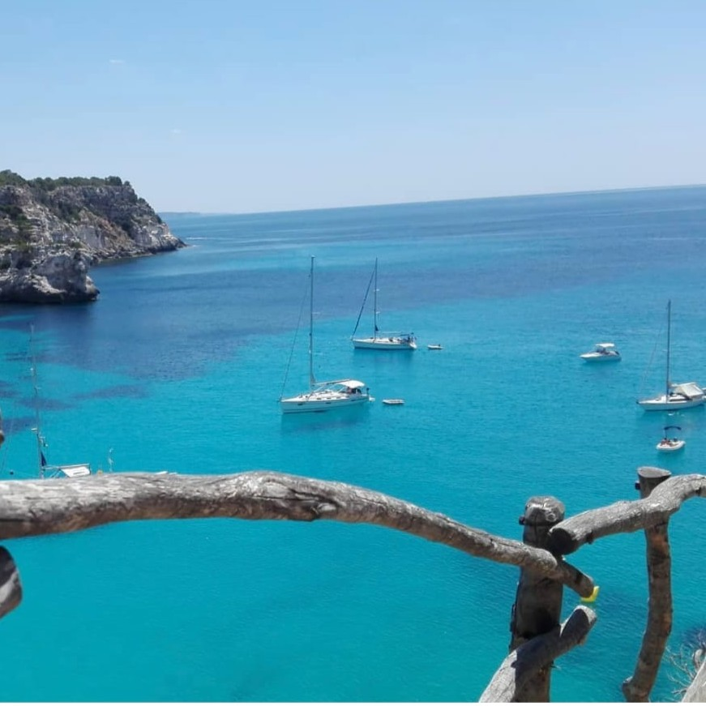
Cala Macarella y su pequeña hermana Cala Macarelleta son las playas más famosas y fotografiadas de Menorca. Están situadas en la costa sur, cerca de Ciutadella. Son calas de arena blanca y fina, rodeadas de pinos y acantilados, con aguas turquesas y cristalinas. Macarelleta es más pequeña y aún más bonita.
El acceso es caminando (10-15 minutos desde el aparcamiento) o en barco. En verano, el aparcamiento se llena rápido (llega antes de las 9am). Hay un chiringuito en Macarella (caro). Es una de las calas más masificadas de Menorca.
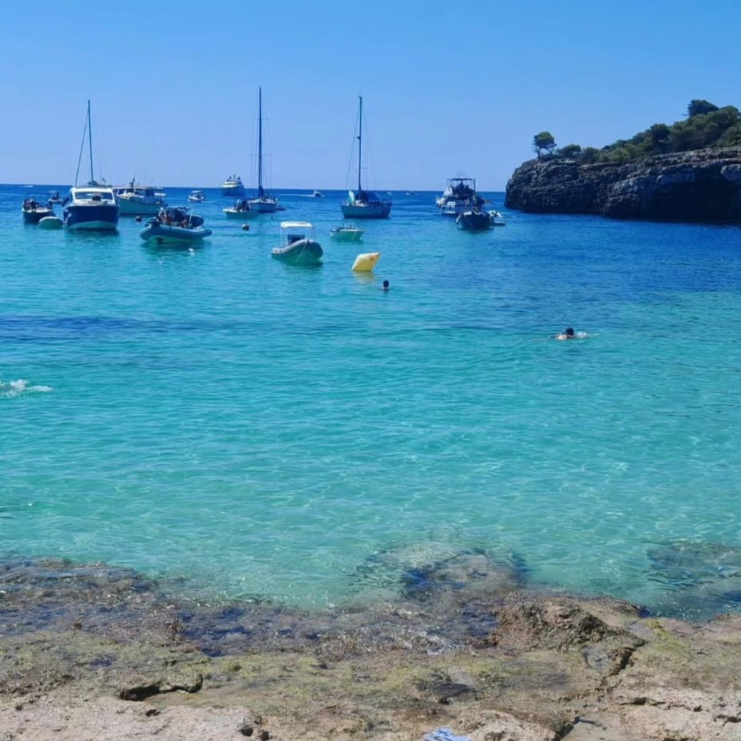
Cala Turqueta es una de las calas más bonitas del sur de Menorca. Su nombre proviene del color turquesa intenso de sus aguas. Es una playa de arena blanca y fina, rodeada de pinos y vegetación. Tiene un pequeño islote rocoso al que se puede nadar.
El acceso es caminando (10-15 minutos desde el aparcamiento) por un sendero de tierra. El aparcamiento es de pago (5-10€) y se llena rápido (llega antes de las 9am). Es ideal para el snorkel (aguas cristalinas). Es una de las calas más populares, así que evita las horas centrales del día en verano.
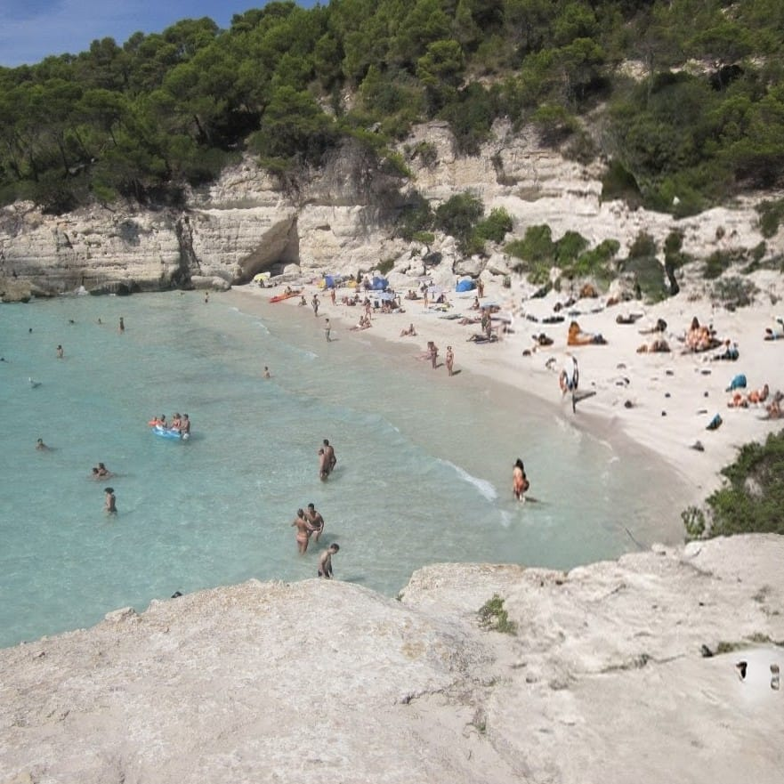
Cala Mitjana es una cala virgen (sin chiringuitos) rodeada de pinos y acantilados. Está situada en el sur de Menorca, cerca de Cala Galdana. Es una playa de arena blanca y aguas turquesas cristalinas. Es una de las calas menos masificadas del sur.
El acceso es caminando (20 minutos desde el aparcamiento de Cala Mitjana) por un sendero de tierra que atraviesa un bosque de pinos. El aparcamiento es gratuito (pero se llena rápido). No hay servicios (lleva agua y comida). Es ideal para el snorkel. La caminata es agradable y sombreada.
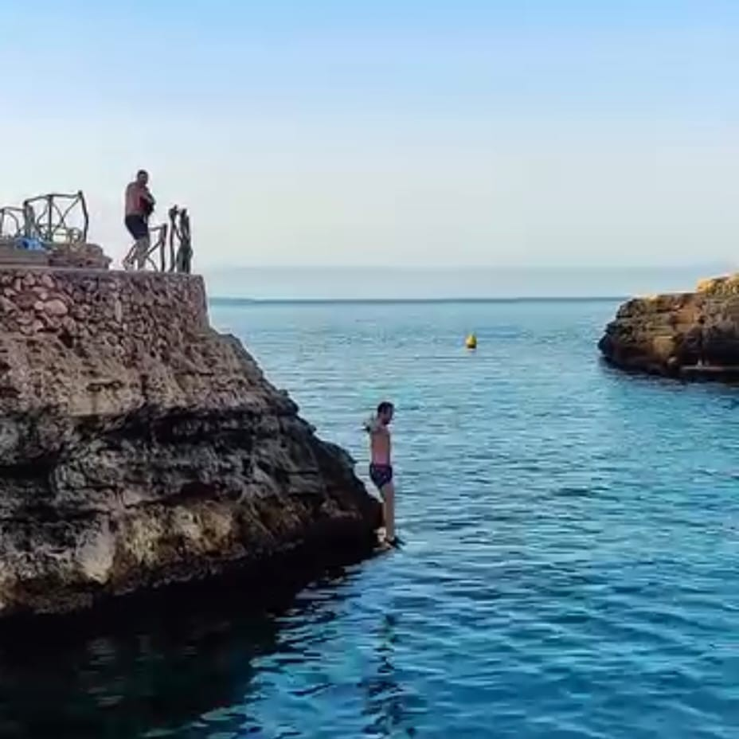
Cala en Brut (también conocida como Cala en Blanes) es una cala de rocas y plataformas de piedra, con piscinas naturales de agua salada. Está situada cerca de Ciutadella, en la costa oeste. Es famosa por sus aguas cristalinas y sus "piscinas" naturales formadas entre las rocas.
No es una playa de arena, sino una zona de rocas con escaleras metálicas para acceder al agua. Es ideal para saltar desde las rocas (con cuidado) y para el snorkel. Hay chiringuitos y restaurantes en los alrededores. El aparcamiento es gratuito (pero se llena rápido). Es una cala muy popular entre los jóvenes.
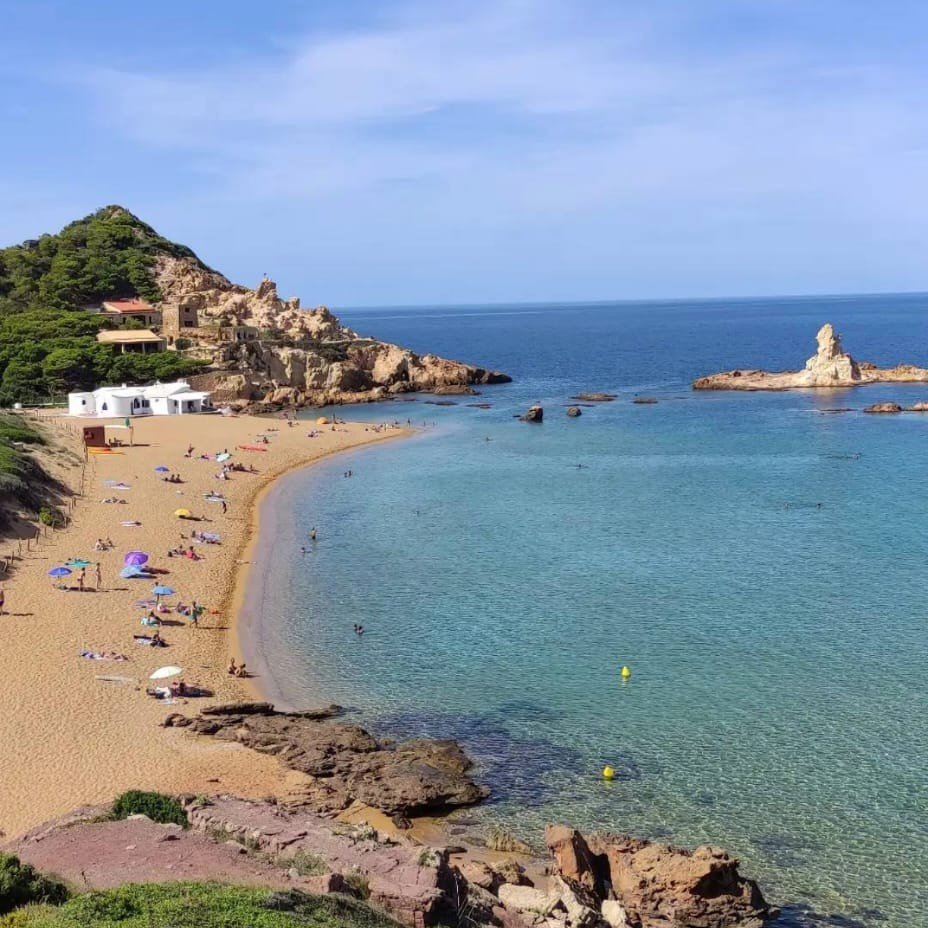
Cala Pregonda es una de las calas más singulares de Menorca. Está situada en la costa norte, cerca de Fornells. Se caracteriza por su arena de color rojizo (por la descomposición del hierro) y sus aguas turquesas y cristalinas. Es una cala virgen, sin chiringuitos.
El acceso es caminando (20-30 minutos desde el aparcamiento) por un sendero de tierra que atraviesa un paisaje árido y rocoso. El aparcamiento es gratuito (pero pequeño). No hay servicios (lleva agua y comida). El paisaje es espectacular, con formaciones rocosas de color rojizo.
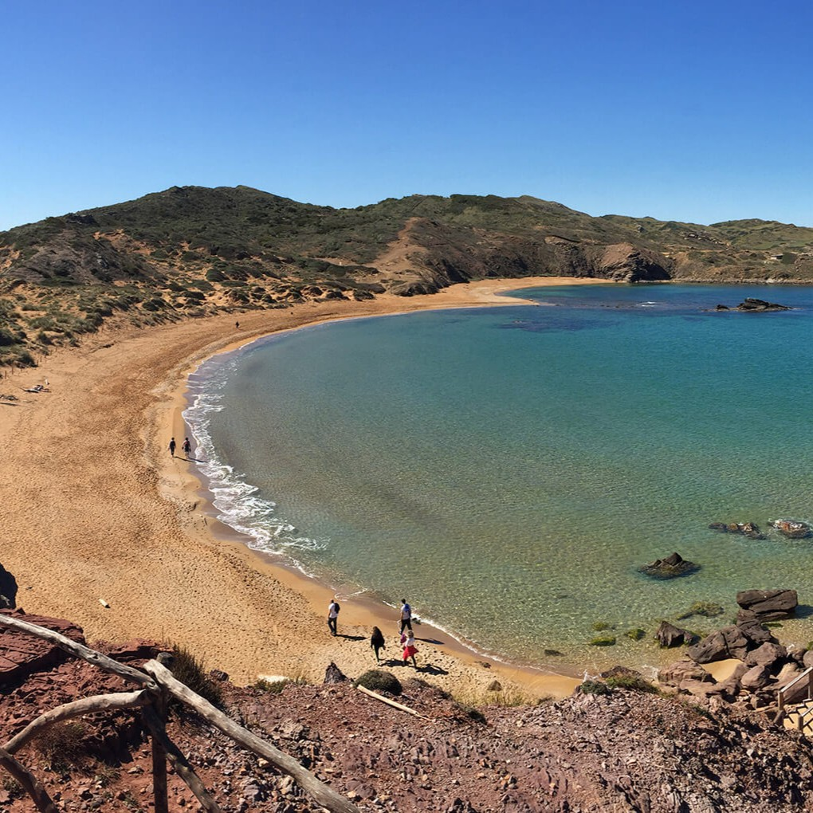
Cala Cavallería es una playa de arena blanca y aguas turquesas en el norte de Menorca. Está cerca del Faro de Cavallería (uno de los faros más famosos de la isla). El paisaje es espectacular, con acantilados y el faro al fondo.
La playa es bastante grande, con arena fina y aguas cristalinas. Hay un chiringuito (caro) y servicio de alquiler de hamacas. El aparcamiento es gratuito. El faro se puede visitar (entrada gratuita) y ofrece vistas espectaculares de la costa norte. Es una playa más familiar y menos masificada que las del sur.
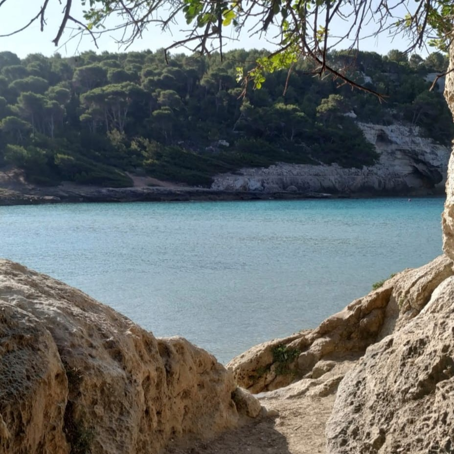
Cala Trebalúger es una pequeña cala virgen situada en la costa sur de Menorca, cerca de Sant Tomàs y Cala Galdana. Es una playa de arena blanca y aguas turquesas y cristalinas. Lo más característico son las barcas de pescadores tradicionales (llauts) varadas en la arena, que le dan un encanto especial.
El acceso es caminando (5-10 minutos desde el aparcamiento) por un sendero de tierra. El aparcamiento es gratuito pero pequeño (llega temprano). No hay servicios (lleva agua y comida). Es una cala menos masificada que Macarella y Turqueta. Es ideal para el snorkel (aguas cristalinas). Es una cala muy fotogénica por las barcas. Está cerca de la urbanización de Son Bou y del Camí de Cavalls.
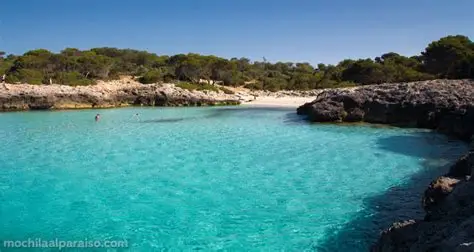
Cala des Talaier es una pequeña cala virgen situada en la costa sur de Menorca, "escondida" detrás de la playa de Son Saura (hay que caminar 10-15 minutos por un sendero que bordea la costa). Es una playa de arena blanca y aguas turquesas, rodeada de vegetación y acantilados.
El acceso se realiza desde el aparcamiento de Son Saura (gratuito, pero se llena rápido). Hay que caminar 10-15 minutos por un sendero de tierra que bordea el acantilado (con unas vistas espectaculares). No hay servicios (lleva agua y comida). Es una cala muy tranquila y poco masificada. Es ideal para el snorkel y para los que buscan tranquilidad.
Cala Morell es una cala situada en la costa norte de Menorca, cerca de Ciutadella. No es una playa de arena, sino una cala de rocas y aguas cristalinas. Es famosa por sus cuevas prehistóricas (navetas y cuevas funerarias) excavadas en los acantilados, que datan de la edad de bronce (1200-750 a.C.).
La cala está protegida del viento del norte, por lo que las aguas suelen estar tranquilas. Es ideal para el snorkel y el buceo (hay una cueva submarina). Hay un chiringuito (caro) y servicio de alquiler de hamacas. El aparcamiento es gratuito. Es una cala muy popular entre los locales. Las cuevas se pueden visitar (entrada gratuita) y ofrecen vistas espectaculares de la costa norte.
Cala Escorxada es una de las calas más vírgenes y salvajes de la costa sur de Menorca. Está situada entre Cala Galdana y Cala Turqueta, y solo es accesible a pie (senderismo) o en barco. No hay carretera ni aparcamiento cerca. Es una playa de arena blanca y aguas turquesas cristalinas, rodeada de acantilados.
El acceso más común es desde el aparcamiento de Cala Mitjana (gratuito, pero se llena rápido). Hay que caminar unos 25-30 minutos por un sendero de tierra que bordea la costa (con unas vistas espectaculares). También se puede acceder desde Cala Galdana (45-60 minutos). No hay servicios (lleva agua y comida). Es una cala muy tranquila y poco masificada (por la dificultad de acceso). Es ideal para los que buscan tranquilidad y naturaleza.
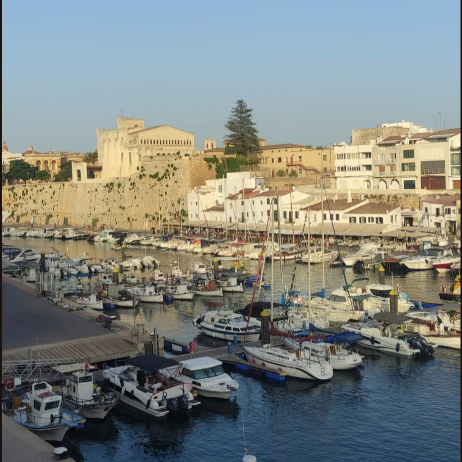
Ciutadella es la antigua capital de Menorca (hasta 1722). Su casco histórico está lleno de palacios, iglesias y callejuelas empedradas de origen medieval. Es la ciudad con más encanto de la isla.
Los lugares imprescindibles son: la Catedral de Santa María de Ciutadella (gótico catalán), el Palacio del Obispo, el Ayuntamiento, la Plaza de Alfonso III, el Claustro del Seminario y el Puerto de Ciutadella (con sus casas de colores). El Bastón de Sa Font es un mirador con vistas al puerto. Es la zona más animada de Menorca, con muchos restaurantes, bares y tiendas. No te pierdas la puesta de sol en el puerto.
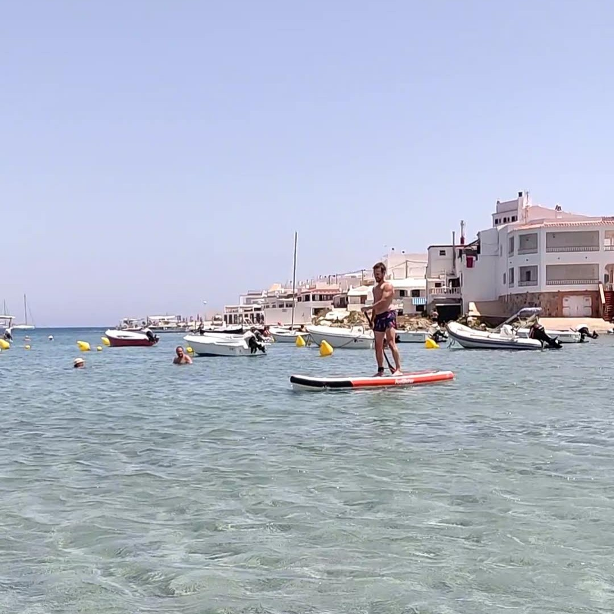
Mahon (Maó en catalán) es la capital actual de Menorca. Su puerto es el puerto natural más grande del Mediterráneo (6 km de longitud). El casco histórico está en lo alto del acantilado, con vistas espectaculares al puerto.
Los lugares imprescindibles son: la Iglesia de Santa María (con un órgano del siglo XIX), el Ayuntamiento, la Plaza de España, el Mercado de Pescado (Mercat des Claustre), y el Museo de Menorca. El Faro de la Mola está en la entrada del puerto. El paseo marítimo es ideal para pasear y comer pescado fresco. Es la ciudad más tranquila de las dos (comparada con Ciutadella).
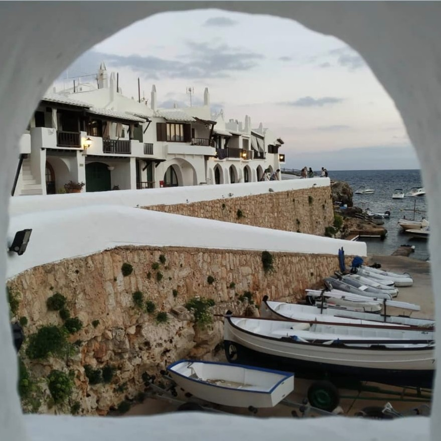
Binibeca Vell es un pueblo de pescadores construido en los años 60, con casas encaladas blancas y calles estrechas. Es uno de los lugares más fotografiados de Menorca. Parece un pueblo griego.
Es un pueblo turístico, pero muy bonito. Las calles son un laberinto de escaleras y arcos. La plaza principal tiene una iglesia blanca y un bar. La calle de las Siete Curvas es la más famosa. Al lado está la cala de Binibeca (una pequeña playa de arena). Es ideal para pasear, hacer fotos y tomar algo. Es muy popular, así que ve temprano o al atardecer para evitar las multitudes.
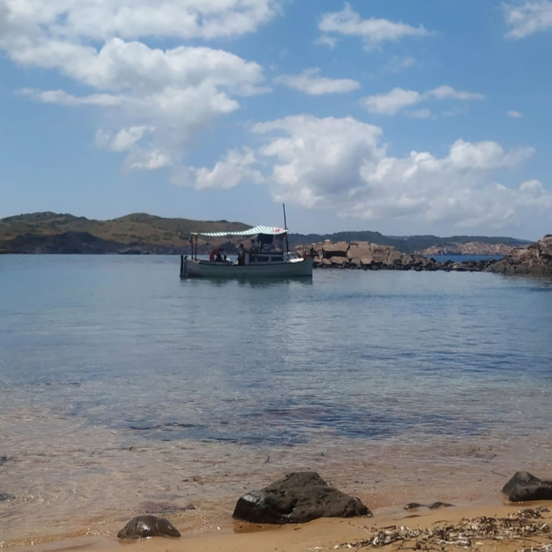
Fornells es un pueblo pesquero en el norte de Menorca, famoso por su puerto natural y por su gastronomía (la caldereta de langosta). Es uno de los pueblos con más encanto de la isla.
El puerto es muy bonito, con casas de colores y barcos de pesca. La Torre de Fornells (torre de defensa del siglo XVII) se puede visitar. Las calles están llenas de restaurantes de pescado (caros, pero la langosta es excelente). Es un pueblo tranquilo y auténtico. Cerca está Cala Pregonda y Cala Cavallería. Es famoso por sus atardeceres.
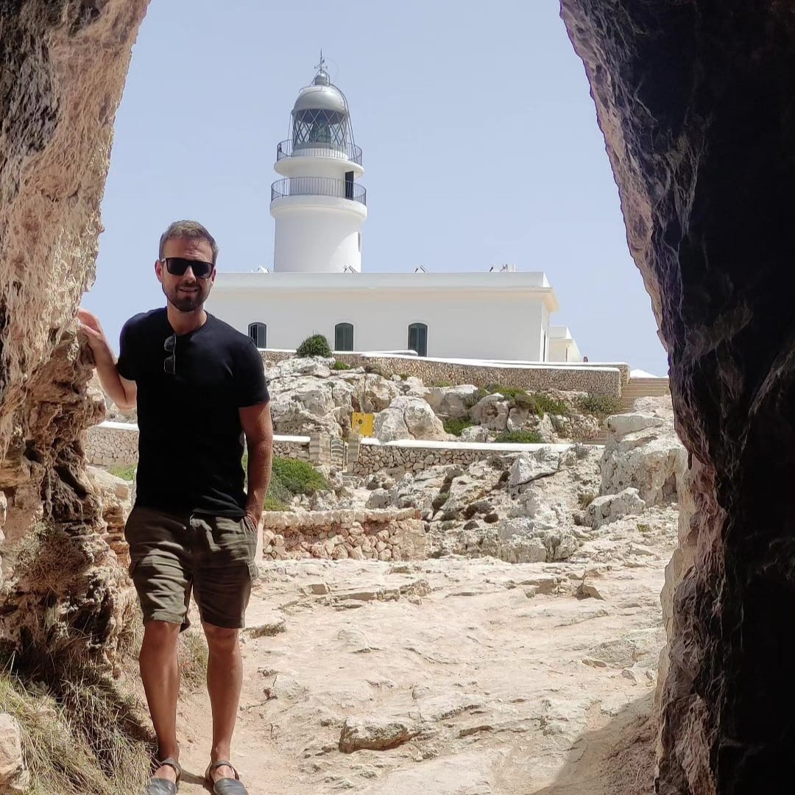
El Camí de Cavalls (GR-223) es un sendero histórico que rodea toda la costa de Menorca. Tiene 185 km de longitud y se divide en 20 etapas. Originalmente era un camino utilizado por los caballos para vigilar la costa.
Los tramos más bonitos son: etapa 3 (Favàritx - Es Grau), etapa 6 (Cala Morell - Punta Nati), etapa 7 (Ciutadella - Cala Morell) y etapa 14 (Cala Galdana - Cala Turqueta). Se puede hacer a pie, en bicicleta o a caballo. Es ideal para los amantes de la naturaleza y el senderismo. No se necesita hacer toda la ruta, se pueden hacer tramos cortos (3-5 km). Lleva agua y protección solar.
Menorca es una isla pequeña pero con mucho que ver. No intentes abarcarlo todo en pocos días. Dedica al menos 5-7 días para poder disfrutar de las calas y los pueblos con calma. Las calas del sur (Macarella, Turqueta, Mitjana) son las más famosas, pero las del norte (Pregonda, Cavallería) son más salvajes y menos masificadas.
El Camí de Cavalls es una de las mejores formas de descubrir la costa de Menorca. Se pueden hacer tramos cortos (3-5 km) sin necesidad de hacer toda la ruta. Lleva agua y protección solar.
La caldereta de langosta es el plato más típico de Menorca, pero es cara (30-50€). Pruébala en Fornells, donde es la especialidad. También se pueden comer buenos pescados a la brasa y la "coca de patata" (un pan típico).
{kind=link}
{kind=link}
{kind=link}
{kind=link}
{kind=link}
{kind=link}
{kind=link}
{kind=link}
{kind=link}
{kind=link}
{kind=link}
{kind=link}
{kind=link}
{kind=link}
{kind=link}
{kind=link}
{kind=link}
{kind=link}
{kind=link}
{kind=link}